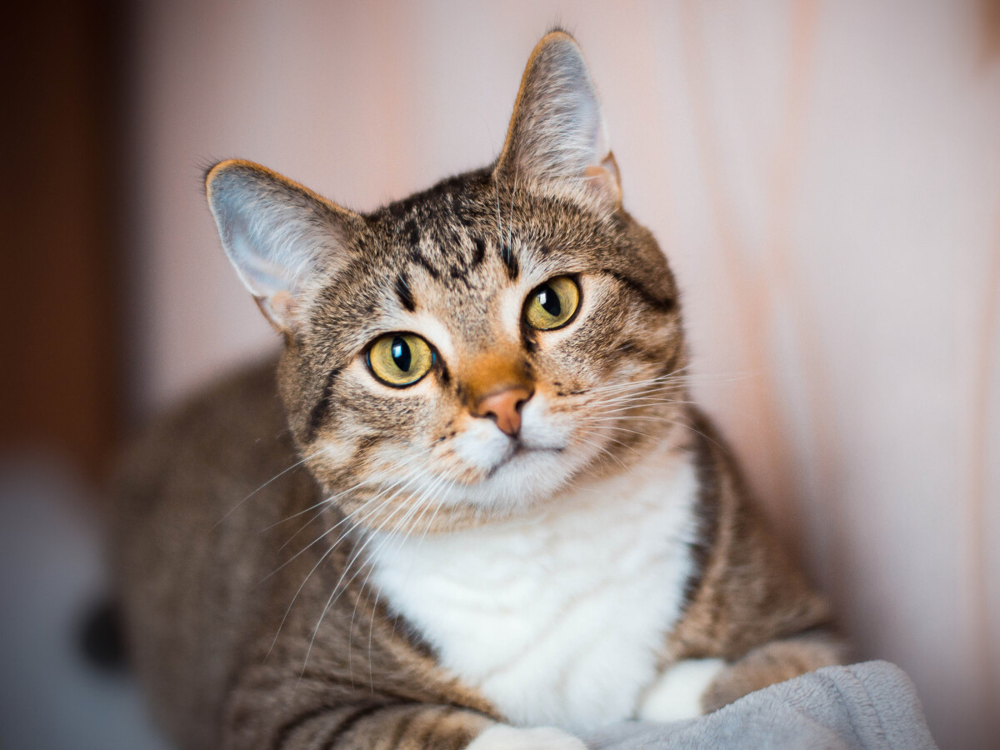

Los gatos blancos y negros, a menudo conocidos como gatos tuxedo debido a su apariencia similar a un esmoquin, son adorables y tienen características fascinantes.
El color naranja en los gatos está vinculado al gen del color llamado "gen naranja" o "gen de la coloración roja". Este gen puede expresarse en varios tonos.

La coloración tricolor en gatos está vinculada al cromosoma X. Los gatos tricolores son en su mayoría hembras. Esto se debe a que el gen que determina el color naranja (gen de la coloración roja) se encuentra en el cromosoma X.
Si alguna vez tienes la oportunidad de convivir con un gato blanco y negro, es posible que te sorprendas por su encanto y personalidad única.
Los gatos naranjas son adorables y pueden hacer compañeros afectuosos y leales. Ya sea que estén jugando activamente o descansando en un lugar cálido y soleado.
Los gatos tricolores tienen una apariencia única y a menudo son apreciados por su distintiva combinación de colores